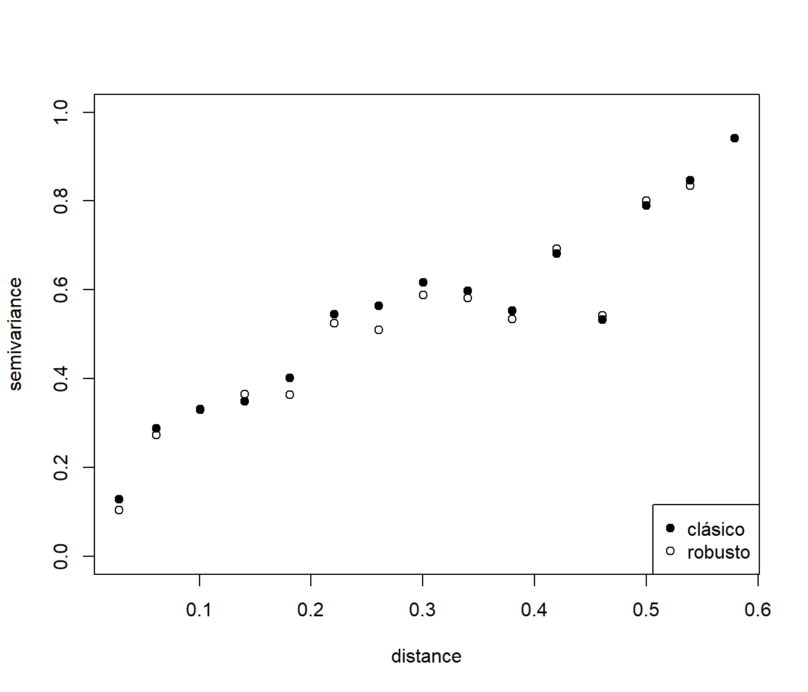
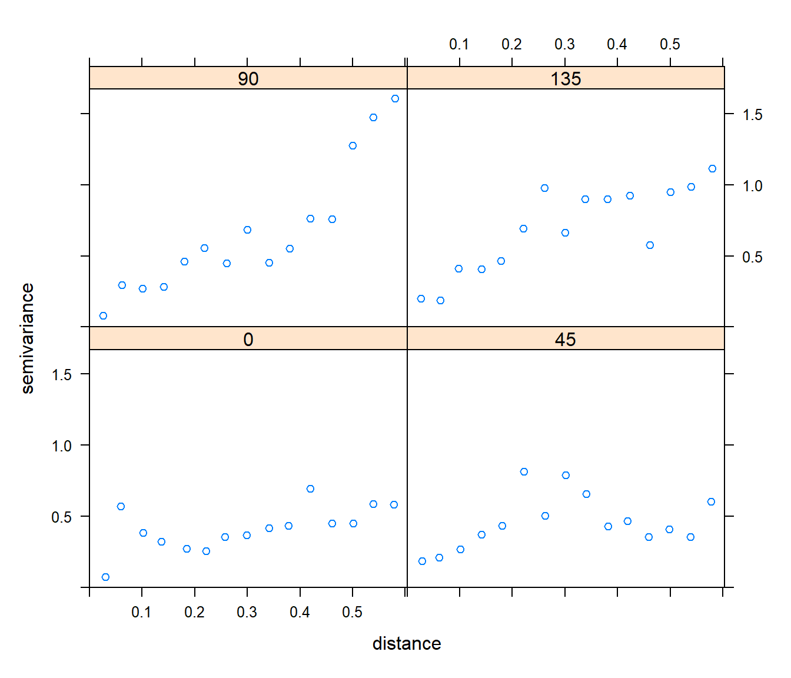

3.1 Estimadores muestrales del semivariograma
Suponiendo que el proceso es intrísecamente estacionario, a partir de (3.1), empleando el método de los momentos, se obtiene el denominado estimador empírico (o clásico) del semivariograma (Matheron, 1962): \[\hat{\gamma}(\mathbf{h}) = \dfrac{1}{2\left| N(\mathbf{h})\right| } \sum\limits_{N(\mathbf{h})}\left( Z(\mathbf{s}_{i})-Z(\mathbf{s}_{j} )\right) ^2 ,\ \mathbf{h}\in \mathbb{R}^{d},\] donde: \[N(\mathbf{h}) = \left\{ (i,j):\mathbf{s}_{i} -\mathbf{s}_{j} \in Tol(\mathbf{h});i,j=1,\ldots,n\right\},\] \(Tol(\mathbf{h})\subset \mathbb{R}^{d}\) es una región de tolerancia en torno a \(\mathbf{h}\) y \(\left| N(\mathbf{h})\right|\) es el número de pares distintos en \(N(\mathbf{h})\). La región de tolerancia debería ser lo suficientemente grande como para que no aparezcan inestabilidades, por lo que se recomienda (Journel y Huijbregts 1978, p.194) que el numero de aportaciones a la estimación en un salto \(\mathbf{h}\) sea por lo menos de treinta (i.e. \(\left| N(\mathbf{h})\right| \geq 30\)).
De forma análoga, suponiendo estacionariedad de segundo orden, se obtiene el estimador clásico del covariograma: \[\hat{C} (\mathbf{h}) = \dfrac{1}{\left| N(\mathbf{h})\right| } \sum\limits_{N(\mathbf{h})}\left( Z(\mathbf{s}_{i})-\bar{Z} \right) \left( Z(\mathbf{s}_{j})-\bar{Z} \right),\ \mathbf{h}\in \mathbb{R}^{d},\] siendo \(\bar{Z} =\frac{1}{n} \sum_{i=1}^{n}Z(\mathbf{s}_{i})\) la media muestral. El principal problema con este estimador es la necesidad de estimar la media \(\mu\) del proceso, lo que produce que sea sesgado. Por otra parte, además de que la suposición de estacionariedad de segundo orden es menos general (Sección 1.3, si el proceso es intrínsecamente estacionario el estimador del variograma es insesgado y también tiene mejores propiedades cuando la estimación se basa en residuos (aunque en este caso ambos estimadores son sesgados). Más información sobre la distribución y propiedades de estos estimadores se tienen por ejemplo en Cressie (1993, pp. 71-74). Estos resultados justifican que el modelado de la dependencia espacial se realice a través del semivariograma.
Uno de los problemas con el estimador empírico del semivariograma es su falta de robustez frente a observaciones atípicas. Por este motivo se han propuesto numerosas alternativas robustas. Hawkins y Cressie (1984) sugirieron promediar la raíz cuadrada de las diferencias en valor absoluto9 y posteriormente transformar el resultado a la escala original tratando de obtener un estimador aproximadamente insesgado (utilizando del método delta), obteniéndose el estimador:
\[2\tilde{\gamma}(\mathbf{h}) = \left( \dfrac{1}{\left| N(\mathbf{h})\right| } \sum\limits_{N(\mathbf{h})}\left| Z(\mathbf{s}_{i})-Z(\mathbf{s}_{j} )\right|^{\frac{1}{2} } \right)^{4} /\left( \text{0.457+} \dfrac{\text{0.494} }{\left| N(\mathbf{h})\right| } +\dfrac{\text{0.045} }{\left| N(\mathbf{h})\right|^2 } \right).\]
Los estimadores locales tipo núcleo son herramientas frecuentemente utilizadas en la estimación de curvas y superficies. Entre los más conocidos podemos señalar los estimadores tipo Nadaraya-Watson y los polinómicos locales (e.g. Fan y Gijbels,1996). Recientemente se han considerado también estas ideas para la estimación del covariograma (e.g. Hall et al., 1994) y del semivariograma. La expresión general de un estimador no paramétrico de un semivariograma isotrópico es de la forma: \[\hat{\gamma}(r) = \dfrac{\sum\limits_{i=1}^{n-1}\sum\limits_{j=i+1}^{n}\omega_{ij} (r)\left( Z(\mathbf{s}_{i})-Z(\mathbf{s}_{j})\right)^2 }{2\sum\limits_{i=1}^{n-1}\sum\limits_{j=i+1}^{n}\omega_{ij}(r)},\] donde \(\omega_{ij}(r) \geq 0\), \(\forall i,j\) y \(\sum_{i,j}\omega_{ij}(r) > 0\). Dependiendo de la elección de estos pesos obtenemos distintos estimadores:
- \(\omega_{ij}(r) = \mathcal{I}_{Tol(r)} \left( \left\| \mathbf{s}_{i} - \mathbf{s}_{j} \right\| \right)\), siendo \(Tol(r)\subset \mathbb{R}\) una región de tolerancia en torno a \(r\) (y denotando por \(\mathcal{I}_{A}(\cdot)\) función indicadora del conjunto \(A\)), obtenemos el estimador clásico del semivariograma.
- \(\omega_{ij}(r)=K\left( \frac{\left\| \mathbf{s}_{i} -\mathbf{s}_{j} \right\| -r}{h} \right)\), es el estimador Nadaraya-Watson (Hall et al., 1994).
- \(\omega_{ij}(r)=K\left( \frac{\left\| \mathbf{s}_{i} -\mathbf{s}_{j} \right\| -r}{h} \right) \times\) \(\sum\limits_{k}\sum\limits_{l}K\left( \frac{\left\| \mathbf{s}_{k} -\mathbf{s}_{l} \right\| -r}{h} \right) \left( \left\| \mathbf{s}_{k} -\mathbf{s}_{l} \right\| -r\right) \left( \left\| \mathbf{s}_{k} -\mathbf{s}_{l} \right\| -\left\| \mathbf{s}_{i} -\mathbf{s}_{j} \right\| \right)\) se obtiene el estimador lineal local del semivariograma (García-Soidán et al., 2003).
La función variogram() del paquete gstat:
variogram(formula, locations = coordinates(data), data, cutoff, width = cutoff/15,
cressie = FALSE, cloud = FALSE, covariogram = FALSE, ...)permite obtener la nube de semivarianzas (cloud = TRUE) y las estimaciones
empíricas o robustas (cressie = TRUE), además de otras posibilidades.
En primer lugar emplearemos el conjunto de datos s100 del paquete geoR, que contiene una simulación de un proceso espacial estacionario (sin tendencia).
# Cargamos los datos y los transformamos a un objeto `sf`
library(sf)## Linking to GEOS 3.9.1, GDAL 3.2.1, PROJ 7.2.1data(s100, package = "geoR")
datos <- st_as_sf(data.frame(s100$coords, z = s100$data),
coords = 1:2, agr = "constant")library(gstat)
vario.cloud <- variogram(z ~ 1, datos, cloud = TRUE, cutoff = 0.6)
vario <- variogram(z ~ 1, datos, cloud = FALSE, cutoff = 0.6)
# Si se quiere tomar el 50% del máximo salto (posible) cutoff = maxlag
# maxlag <- 0.5*sqrt(sum(diff(apply(s100$coord, 2, range))^2))
# maxlag <- 0.5*sqrt(sum(diff(matrix(st_bbox(datos), nrow = 2, byrow = TRUE))^2))
names(vario)## [1] "np" "dist" "gamma" "dir.hor" "dir.ver" "id"NOTA: La componente dist contiene los saltos, gamma las estimaciones del semivariograma (semivarianzas) y np el número de aportaciones.
rvario.cloud <- variogram(z ~ 1, datos, cloud = TRUE, cressie = TRUE, cutoff = 0.6)
rvario <- variogram(z ~ 1, datos, cloud = FALSE, cressie = TRUE, cutoff = 0.6)
oldpar <- par(mfrow = c(1, 2))
with(vario.cloud, plot(dist, gamma, col = "darkgray",
xlab = "distance", ylab = "semivariance"))
with(vario, points(dist, gamma, pch = 19))
with(rvario.cloud, plot(dist, gamma, col = "darkgray",
xlab = "distance", ylab = "semivariance"))
with(rvario, points(dist, gamma, pch = 19))
par(oldpar)Para un análisis exploratorio de la anisotropía, podemos obtener variogramas direccionales indicando el ángulo y los grados de tolerancia en cada eje:
plot(variogram(z ~ 1, datos, cutoff = 0.6, alpha = c(0, 45, 90, 135)))Complementariamente, se puede obtener un mapa de semivarianzas discretizadas en dos dimensiones:
variogram.map <- variogram(z ~ 1, datos, cutoff = 0.6, width = 0.6 / 15, map = TRUE)
plot(variogram.map)
Para estudiar si hay dependencia espacial (estadísticamente significativa) se puede emplear la rutina sm.variogram del paquete sm.
Estableciendo model = "independent" devuelve un p-valor para contrastar la hipótesis nula de independencia
(i.e. se acepta que hay una dependencia espacial si \(p \leq \alpha = 0.05\)) y un gráfico en el que se muestra el estimador empírico robusto, un estimador suavizado y una región de confianza para el variograma suponiendo que el proceso es independiente (i.e. consideraríamos que hay dependencia espacial si el variograma suavizado no está contenido en esa región).
library(sm)## Package 'sm', version 2.2-5.6: type help(sm) for summary informationsm.variogram(s100$coords, s100$data, model = "independent")## Test of spatial independence: p = 0.024También se puede realizar contrastes adicionales estableciendo el parámetro model a "isotropic" o "stationary".
Si el proceso \(Z(\cdot)\) es normal entonces \((Z(\mathbf{s})-Z(\mathbf{s}+\mathbf{h}))^2\) sigue una distribución \(2\gamma(\mathbf{h})\chi_1^2\), sin embargo esta distribución es muy asimétrica y la transformación de potencia que hace que se aproxime más a la simetría (normalidad) es la raíz cuarta. Otra ventaja de utilizar la raíz cuadrada de las diferencias es que, en general, están menos correladas que las diferencias al cuadrado (ver p.e. Cressie, 1993, p. 76).↩︎